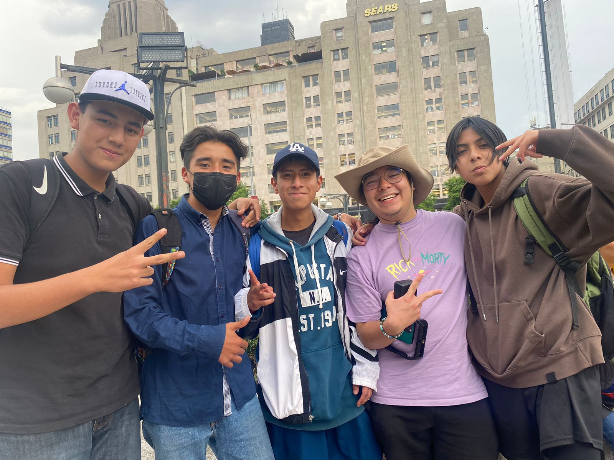
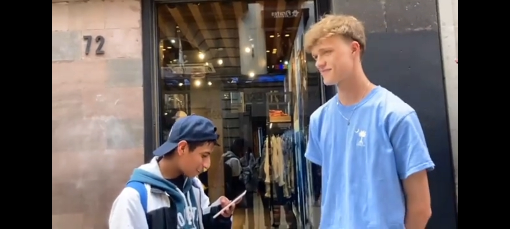
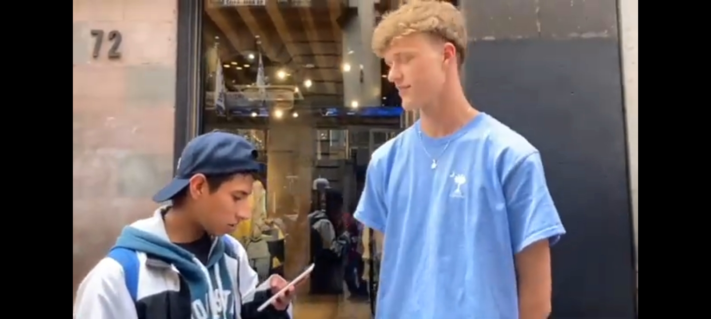

mi entrevista la base principalmente en
el turismo en mexico, haciendo preguntas
acerca de lo que les ah parecido mexico
asi como sus cosas que mas les ah gustado
de mexico como la comida o lugares
las preguntas que hice
las preguntas que hice en ingles fueron las siguientes
what´s your name?
do you enjoying mexico?
whats tourist attraction did you like the most about mexico?
what is your favorite mexican food?
why is he going to be in mexico?
what is the reason for you visit to mexico?
y termines agradeciendo con un thank
las preguntas que hice en español
cual es tu nombre?
has disfrutado mexico?
cual es tu atraccion turistica favorita de mexico?
cual es tu comida mexicana favorita?
cuanto tiempo piensan quedarse en mexico?
cual es la razon de su visita a mexico?
gracias
lo que senti
senti muchos nervios ya que muchas veces
nos rechazaron ademas de que nunca habia
hecho una entrevista en un idioma que no es
el mio, ademas de que me daba miedo las
burlas que podia recibir por los extranjeros
al no pronunciar bien el idioma
presiona la imagen para ver el video
|  |  |  |